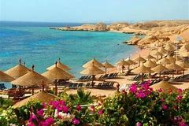
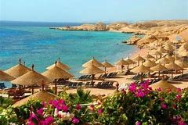

Egypt is famous for its ancient civilization and some of the world’s most famous monuments, including the Giza pyramids, the Great Sphinx and the ancient temples of Luxor dating back thousands of years. Although focus of most tourist visits remains the great monuments along the Nile, possibilities for Egyptian travel also includes snorkeling and diving along the Red Sea coast. Other tourist attractions in Egypt include camel trips into the mountains of Sinai, tours to remote oases or visits to the Coptic monasteries of the Eastern Desert. Cairo is one of the world's great megacities. As beautiful as it is crazy, and as rich in historic finery as it is half dilapidated, Cairo tends to be a city that travelers love and hate in equal measures. Its sheer noise, pollution, and confounding traffic are an assault on your senses, but look beyond the modern hubbub, and you'll find a history that spans centuries. Full of vigor, Cairo is where you really get a feel for Egyptian street life. No trip to Egypt is complete without a stay in the city Arabs call Umm al-Dunya (The Mother of the World). Find the best places to visit and interesting things to do in this buzzing metropolis with our list of the top attractions in.The Pyramids of Giza are Cairo's number one half-day trip and a must-do attraction on everyone's itinerary. Right on the edge of the city, on the Giza Plateau, these fourth dynasty funerary temples have been wowing travelers for centuries and continue to be one of the country's major highlights. Despite the heat, the dust, and the tourist hustle, you can't miss a trip here.Directly behind the Great Pyramid is the Solar Boat Museum, which displays one of the ceremonial solar barques unearthed in the area that has been painstakingly restored to its original glory.Farther south on the plateau is the Pyramid of Chephren (also known as the Pyramid of Khefre), with an internal tunnel area, which can be entered, and the smaller Pyramid of Mycerinus (Pyramid of Menkaure). Guarding these mortuary temples is the lion-bodied and pharaoh-faced Sphinx; one of the ancient world's iconic monuments.The Giza Plateau is set to welcome another attraction when the Grand Egyptian Museum (GEM) is finally finished. When opened, it will be the biggest museum in the world devoted to exhibiting the antiquities of a single civilization, displaying a wealth of Ancient Egypt's artifacts that have never been seen by the public before. After a stop-start construction, beset with financial difficulties, the museum opening date has been set for 2020.


 
